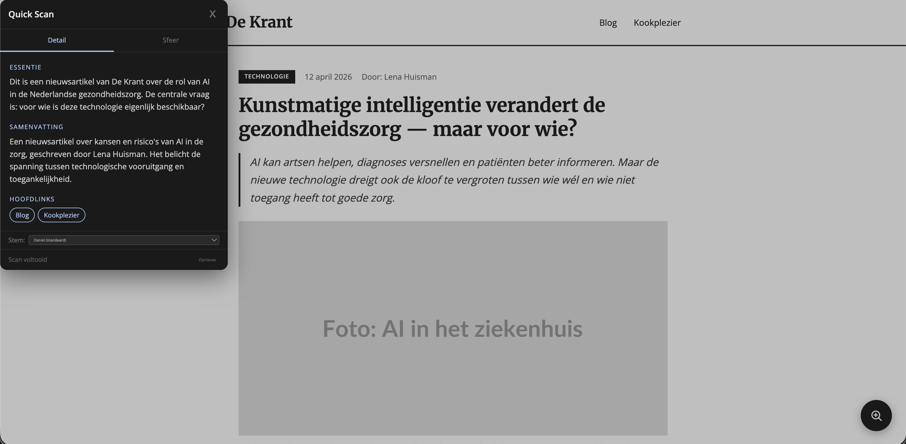

Human Centered Design
Project omschrijving
Voor Human Centered Design heb ik een webprototype gebouwd voor Ihab, een blinde gebruiker die dagelijks met een screenreader werkt. Het idee: een popup met drie tabs (Quick Scan, Detail en Sfeer) waarmee hij razendsnel kan horen wat de essentie van een webpagina is, welke links en afbeeldingen er staan, en wat de sfeer of stemming van de pagina is. Alles via de Web Speech API.
Plannen, ontwikkelingen en reflecties
Ik begon met een simpeler idee: een knop die de sfeer van een pagina detecteert via sleutelwoorden en de screenreaderstem aanpast. Maar na de eerste test met Ihab bleek dat hij dat niet zo nuttig vond: hij had meer behoefte aan een samenvatting van wat er op een pagina staat. Dat was een belangrijke omslag: niet bouwen wat ik zelf cool vind, maar wat hij écht mist.
Daarna heb ik een popup gebouwd via een <dialog> element met showModal() zodat de focus automatisch goed zit voor de screenreader. De Quick Scan leest meteen voor wanneer de popup opent, geen extra klik nodig. Ihab kan ook een stem kiezen, en ik heb dubbele stemmen (Frank en Alva die dezelfde onderliggende stem gebruiken) gefilterd zodat hij echt een keuze heeft.
Ik heb meerdere testronden gedaan. Elke keer kwamen er nieuwe punten uit: het kruisje had geen label, emoji's voor knoppen werken verwarrend, Quick Scan en Detail konden samengevoegd worden. Die feedback direct doorvoeren was leerzaam, maar ook soms frustrerend: je denkt dat iets klopt totdat je het test.
Afbeeldingen

Uitkomsten en inzichten
Dit project heeft me het meeste geleerd over hoe je voor een specifiek persoon ontwerpt. De Exclusive Design Principles van Vasilis van Gemert (Study Situation, Ignore Conventions, Prioritise Identity en Add Nonsense) gaven een goed kader. Ik heb geleerd hoe de Web Speech API werkt, hoe je focus management regelt in een dialoogvenster, en hoe groot het verschil is tussen wat jij als ontwerper bedenkt en wat een gebruiker écht nodig heeft.
De Sfeer-tab is mijn favoriete toevoeging: niet strikt functioneel, maar precies het soort nuance dat een standaard screenreader nooit biedt. Dat kleine stukje plezier toevoegen voor recreatief gebruik vond ik het meest voldoeninggevend van dit hele project.